Contents
Quick start
Four steps and your first cycle is planned.
The app plans the month the way salary works. If you're paid on the 27th, your cycle runs from the 27th to the 26th, not the 1st to the 31st. Everything else — Overview, Income, Payments, widgets and the Wallet pass — follows that cycle.
1Opening the app
A short splash, then your tabs — or a lock screen if you've turned security on.
Keep it private
In Settings → Security, turn on Face ID (iPhone), Touch ID (Mac), or a PIN as a backup. If you leave the app for a few minutes, it locks again.
Arrange your tabs
In Settings → Tab Order, move the screens you use most to the front. On iPhone, anything that doesn't fit is under More.
Security only controls opening the app on that device. Your Apple ID and iCloud still protect the data you sync.
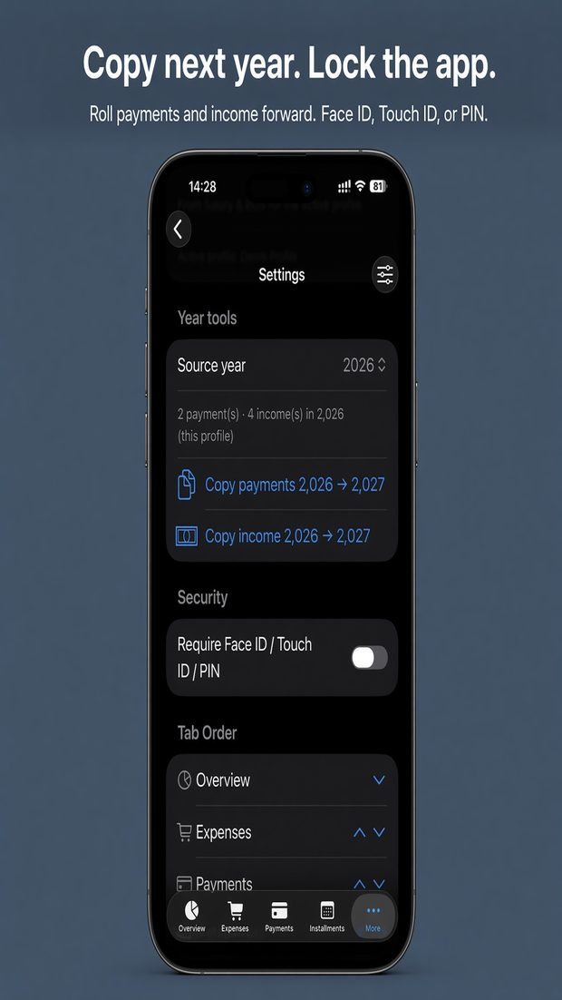
2Profiles & your billing cycle
A profile is a separate set of numbers — yours, a partner's, or a second budget.
Each profile has its own income, payments, cards, expenses, savings, installments, salary details, end-of-service settings, cycle start day and display currency.
Switch, add or rename
- Open Settings (on iPhone, it may be under More).
- Under Profiles, tap a profile to switch to it, or Add Profile… to create one.
- Use the pencil to rename, or the trash icon to delete. Deleting a profile deletes its data.
Set your billing cycle
Under Billing Cycle (this profile), choose the day your cycle starts:
- Day 1 gives calendar months, like 01 Aug – 31 Aug.
- Day 27 gives 27 Jul – 26 Aug for the cycle that ends in August.
- Day 31 starts on the 31st, or on the last day of shorter months (28 or 29 February, 30 April).
Match the start day to when your salary usually arrives. Bill due dates stay real calendar days (the 16th of October), separate from the cycle.
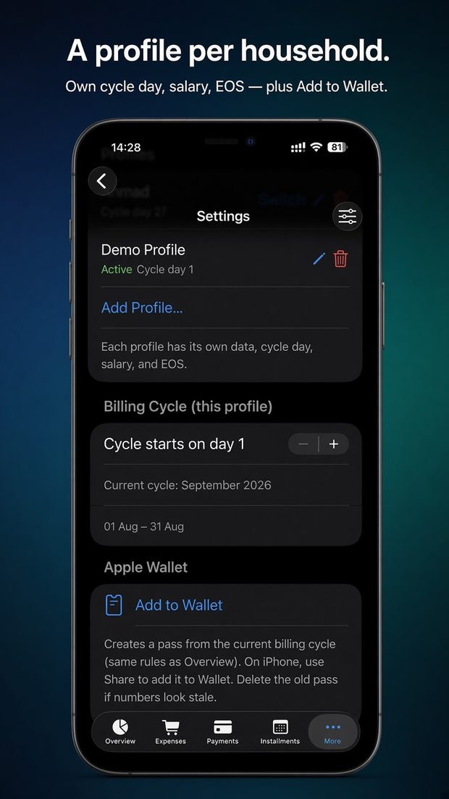
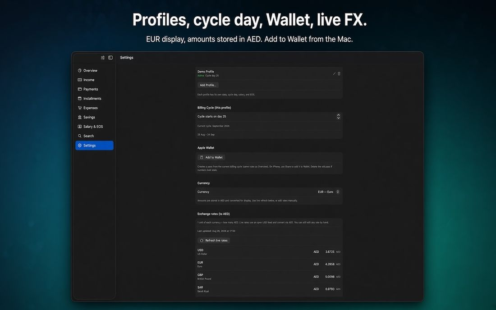
3Overview — your money at a glance
The home dashboard for the profile you're using.
Pick Month or Year, then the year and cycle. The location-arrow button jumps back to the current cycle.
What the cards mean
If you have credit cards, Overview also shows a line per card with its remaining limit.
Due today & overdue
When a bill is due today or late, a warning card at the top lists it with its real date (for example, Aug 1).
History & breakdown
The breakdown chart splits the cycle by category. On iPad, Mac and iPhone Duo you also get the last 12 cycles as bars or a line.
Export PDF
Tap Export PDF to save or share a summary of the cycle you're viewing: income, paid and unpaid payments, expenses by category, and what's left.
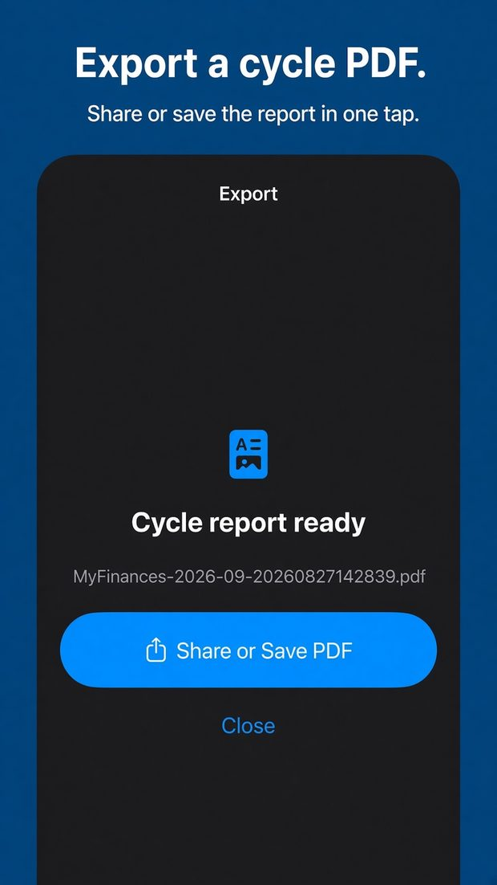
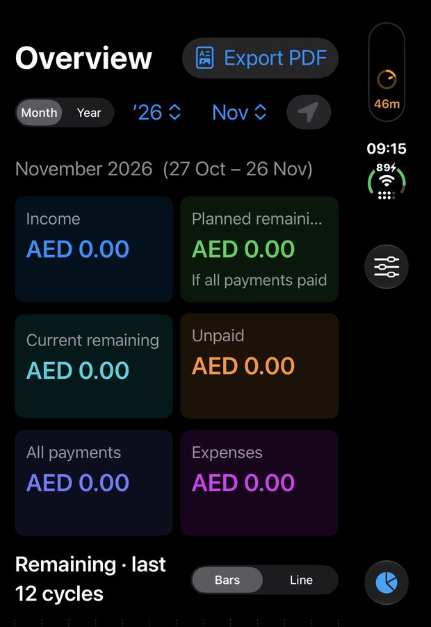
4Income
Record what you receive each cycle.
Choose the year, then add the month, amount and an optional note. Each row shows its cycle range under the month name (for example, 27 Jul – 26 Aug).
- If you've filled in Salary, your total monthly salary is suggested as the amount.
- Search the list when it gets long, and edit or delete a row when something changes.
- Starting a new year? Copy your income forward from Settings → Year tools.
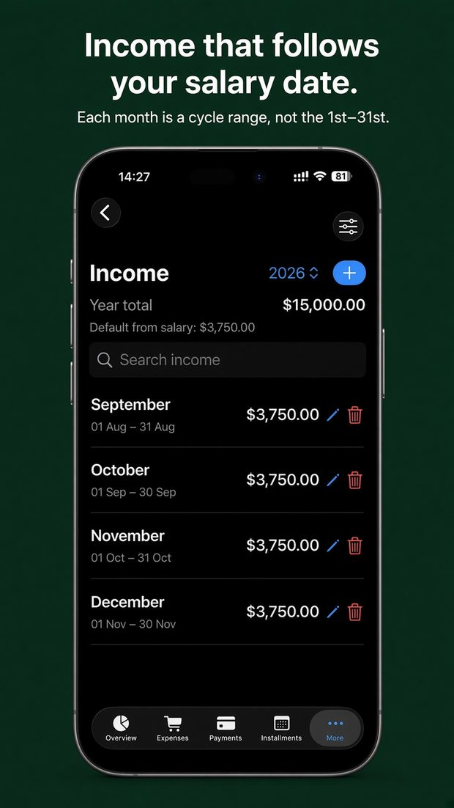
5Payments
Your planned bills: rent, utilities, subscriptions, loan repayments, transfers to savings.
Add a payment
- Tap + and enter the name and amount.
- Set the due day (1–31). This is the calendar day of the month, not a day inside the cycle.
- Choose the year and the months it applies to, or Every month.
- Pick a category, or create your own. Use Savings for money you're putting aside.
- Under Paid from, keep Income or choose a credit card or savings.
Mark months paid
Each month has its own switch, so a yearly bill can be paid for January to July without touching August.
Filters & search
Use Due this cycle to focus on what matters now, or the full year when you need the big picture.
Mark a Savings-category payment as paid and the app asks where it should go. It then appears in Savings and on your Wallet pass.
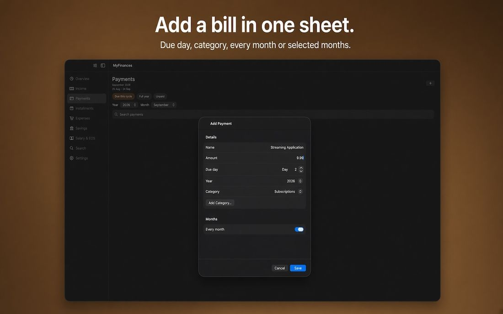
6Credit cards
Track what you've put on each card and what's left of the limit.
Open the Cards tab and tap Add Card…. Enter a nickname, the credit limit and the due day. The app never asks for or stores a card number or expiry date.
- Owed is everything you've marked as paid from that card. Remaining is the limit minus what's owed.
- When you add a payment or expense, set Paid from to Credit Card and pick the card.
- The app creates the card's bill as a payment on its due day in the next cycle. Paying that bill clears what's owed, and partial payments reduce it.
- If a charge would push a card below zero, you'll get a warning before saving.
- Delete a card and its payments and expenses stay — they simply go back to Income.
One card is free. More than one card needs My Finances Planner Pro.
7Installments
For anything paid off over several months — Tamara, Tabby, a bank loan, a car.
Enter the name, start date, and two of: total amount, monthly amount, number of months — the third fills in. Choose a type (Credit Card, Tamara, Tabby, Bank, Personal, Car loan, Mortgage or Other) and, if you like, a source such as the bank or shop.
When you save, the app creates matching payments, so each month also shows up in Payments and Overview. Long plans create one linked payment per year.
Catch up in one tap
Mark a later month paid and the app asks whether to mark this month only or all previous months plus this one.

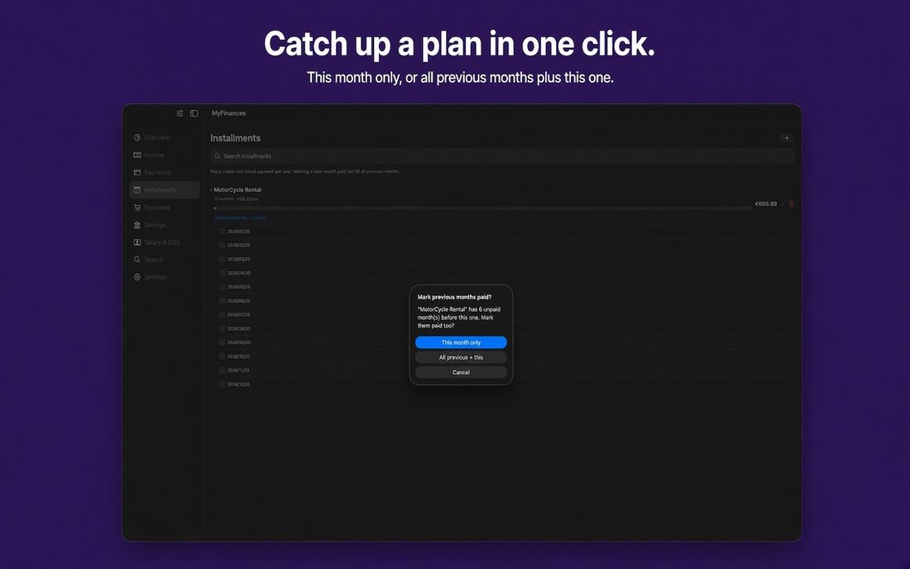
8Expenses & category caps
Everyday spending inside a cycle — groceries, fuel, food, shopping.
Add the name, amount, date, category and an optional note. Categories include Grocery, Fuel, Food, Shopping and Other, or create your own. Expenses can be paid from Income, a credit card, or savings, and they reduce Current remaining on Overview.
Monthly caps
In Settings → Expense category caps, set a monthly limit per category (leave it blank for no limit). The Expenses tab warns you when a category goes over.
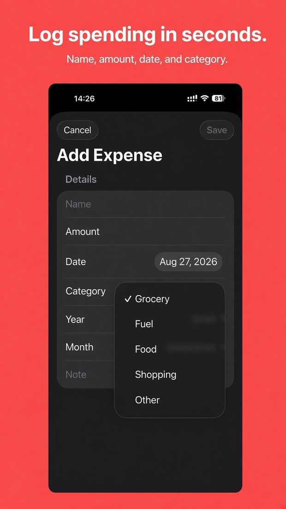
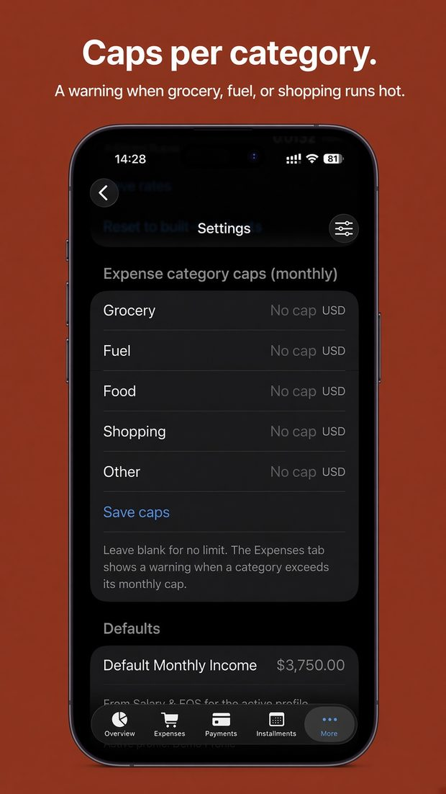
9Savings & goals
Watch your savings grow toward a target.
Savings grow in two ways: mark a Savings payment as paid, or add an entry in the Savings tab. Choose where the money went — bank account, cash or other.
Goals
Tap the target button to create a goal with a target amount, then track progress. Name savings entries with the goal name so they count toward it.
Spending from savings
When a payment or expense is Paid from → Savings, you can pick which goal it comes out of, or leave it unallocated.
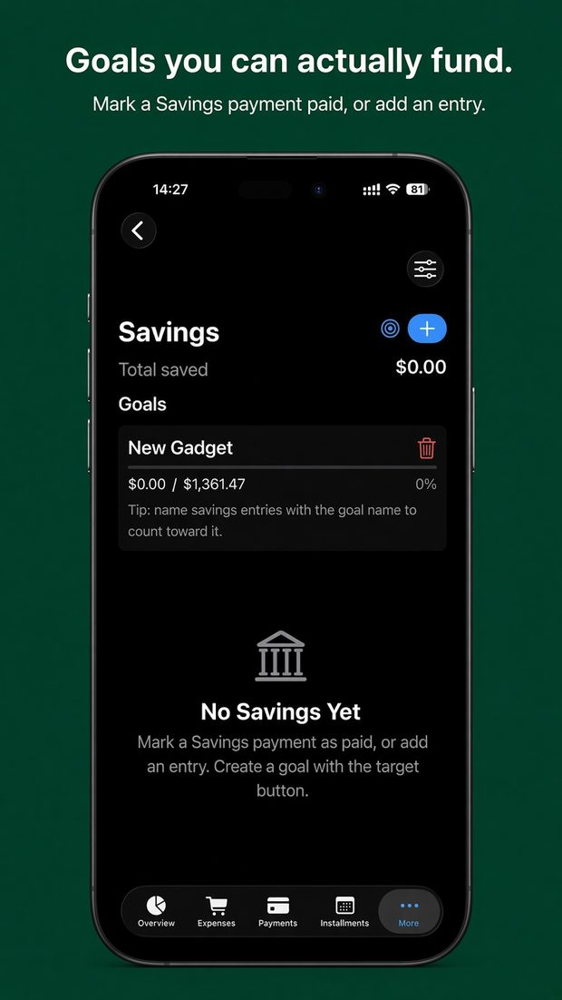
10Salary & end of service
Your monthly salary breakdown and an estimate of your end-of-service award.
Salary
Enter Basic, Housing, Transport and Other. The total becomes the default income amount for this profile.
Country & law
- UAE — Private (typically 21 days per year for the first five years, then 30 days, on basic wage), Public, or Domestic.
- Saudi Arabia, Qatar, Kuwait, Bahrain, Oman — built-in estimates for each country's common private-sector rules.
- Other — enter your own days per year for early and later years, and whether it's based on basic or full salary.
Set your join date and, optionally, a resignation date or limited contract. Years of service update automatically.
Advances
If you've taken advances against end of service, add them with a date. Net EOS is the estimate after those deductions.

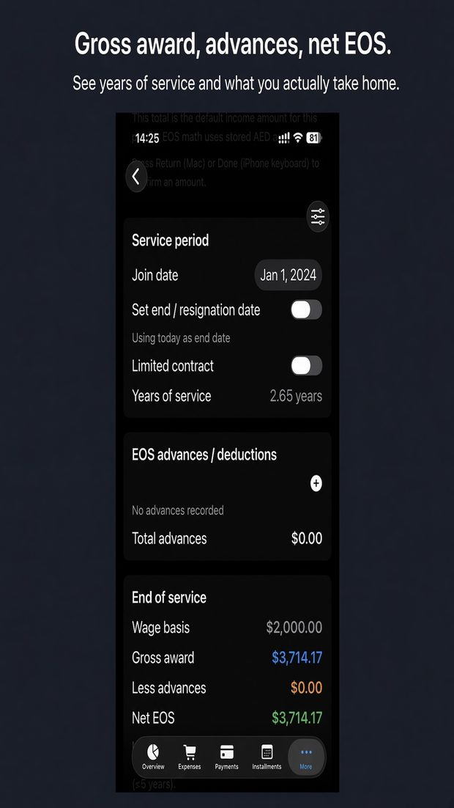
Estimates are for planning only — confirm final amounts with your employer or official guidance. They're always calculated in AED, so changing the display currency doesn't change the estimate.
11Apple Wallet pass
Your remaining balance, one glance away in Wallet.
In Settings → Apple Wallet, tap Add to Wallet. The pass is a snapshot of the current cycle for the active profile, using the same Current remaining figure as Overview.
- Front: income remaining, savings, unpaid count and your first card.
- Back: billing cycle, profile, and every card with what's remaining and used.
On iPhone it opens Wallet directly. On Mac, the app builds the pass for you to add.
The pass doesn't update itself. After paying bills, open Overview, then add a fresh pass and delete the old one in Wallet.
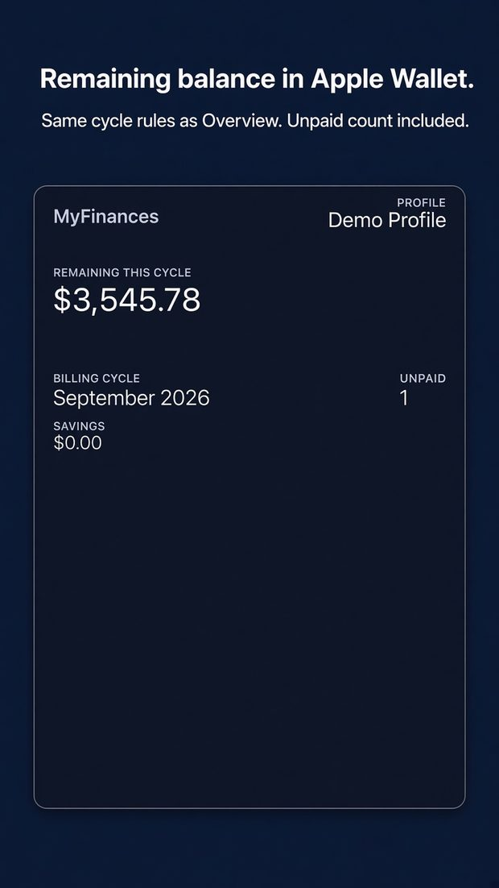
12Settings
Currency, reminders, year tools and more.
Currency & exchange rates
Amounts are stored in AED and shown in the currency you choose — USD, EUR, GBP, SAR, QAR and others. Tap Refresh live rates when you're online, or edit any rate yourself. Check with your bank when an exact conversion matters.
Reminders & calendar
Turn on Payment Reminders and choose how many days before the due date to be notified. Export to Calendar adds your due dates to Calendar.
Year tools
Copy payments or income from one year into the next, so January planning takes seconds.
Also in Settings
- Backup & restore under Data Transfer.
- Danger Zone — reset all app data. This is permanent.
- About — privacy policy, this guide, and Contact Developer.
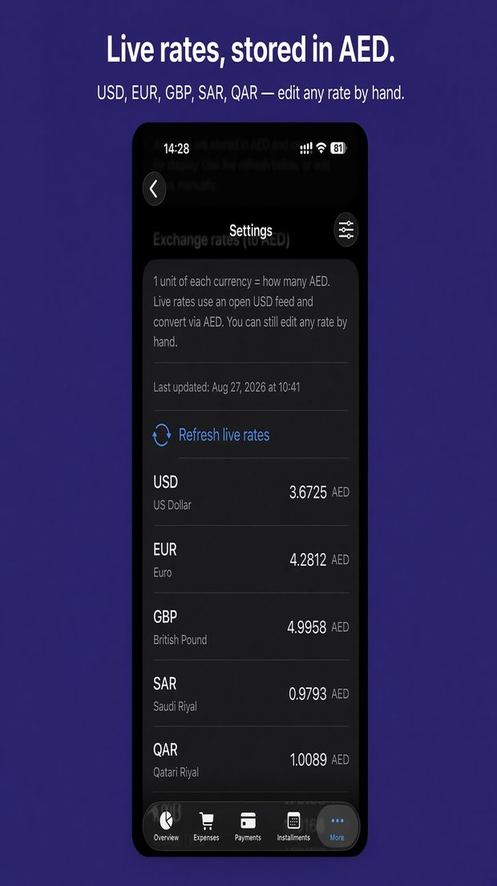
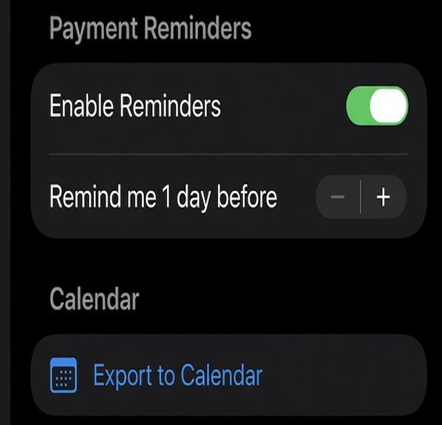
13Backup & restore
Keep a copy of everything in a single file.
In Settings → Data Transfer, tap Export Backup (JSON) and save the file somewhere safe, like iCloud Drive or Files. To restore, tap Import Backup (JSON) and pick the file.
What's included
Income, payments, installments, expenses, savings, credit cards, savings goals, salary, end-of-service settings and advances, which card or goal each payment and expense was paid from, categories, category caps — and all your other profiles.
How restoring works
- The backup's main profile is restored into the profile you're currently using, replacing its data.
- Your other profiles are matched to the ones on your device — updated if they exist, created if they don't.
- Backups from older versions of the app still import.
Importing replaces data, so export a fresh backup first if you're unsure. Backup export and import are part of Pro.
14Widgets & Apple Watch
See what's left without opening the app.
iPhone & Mac widgets
Open Overview once, then add a widget from your Home Screen (iPhone) or Notification Center and desktop (Mac). There are three styles:
- Snapshot — cycle name, planned remaining, first card, unpaid count.
- Overview tiles — income, planned and current remaining, unpaid, and the first card.
- Due this cycle — unpaid bills with their dates.
Mac users get widgets without needing the iPhone app.
Apple Watch
The Watch app shows current and planned remaining, unpaid count, cards and what's due this cycle. Add the watch-face widget for remaining, unpaid and your first card at a glance. Keep your iPhone nearby with the app installed.
Widgets and the Watch update when you open Overview. If they show zeros or old numbers, open Overview on iPhone or Mac and wait a few seconds — on Watch, tap Refresh.
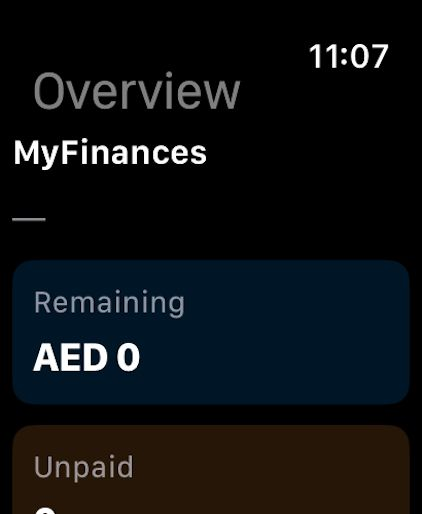
15Syncing with iCloud
The same numbers on iPhone, iPad and Mac.
With iCloud on and the same Apple ID on each device, your changes appear everywhere. Give sync a few minutes after installing, and stay on Wi-Fi after big imports so it can finish.
- Select the same profile on each device to see the same numbers.
- Keep every device on the latest version of the app so cards, goals and links sync correctly.
- Your data stays in your own iCloud account. It isn't sent to us or sold.
16Free & Pro
Everything you need to plan a cycle is free. Pro adds more for power users.
| Feature | Free | Pro |
|---|---|---|
| Income, payments, installments, expenses, savings, Salary & EOS | ✓ | ✓ |
| Widgets, Apple Watch, iCloud sync | ✓ | ✓ |
| Profiles | 1 | Unlimited |
| Credit cards | 1 | Unlimited |
| Apple Wallet pass | — | ✓ |
| Backup export & import | — | ✓ |
| Cycle PDF export & calendar export | — | ✓ |
| Copy to next year | — | ✓ |
Subscribe in Settings → My Finances Planner Pro. It's a yearly subscription that you can manage or cancel in your Apple account settings.
17Questions
Quick answers to the things people ask most.
Why does Overview show a cycle like 27 Jul – 26 Aug?
Your profile's cycle starts on day 27. Change it in Settings → Billing Cycle — choose day 1 for calendar months.
My cycle starts on the 31st — why does February end on the 27th?
February has no 31st, so its cycle starts on the last real day (the 28th) and the previous cycle ends the day before.
Why is planned remaining negative?
Your planned payments for the cycle add up to more than the income you've recorded. Add income, adjust your plans, or check you're on the right profile and month.
A payment doesn't show in this cycle.
Check its due day, year and selected months. A payment belongs to the cycle that contains its real due date — not "day 16 of the cycle".
A widget or the Watch shows 0.
Open Overview on iPhone or Mac so the app publishes a fresh summary, then check again.
My Wallet pass shows old numbers.
Passes are snapshots. Add a new pass from Settings after updating payments, and delete the old one in Wallet.
Adding to Wallet says "Please update My Finances Planner".
Your version of the app is out of date. Update it from the App Store, then try again.
A card shows less remaining than I expected.
Owed includes every payment and expense marked as paid from that card. Paying the card's bill (created automatically on its due day) brings owed back down.
My end-of-service estimate changed when I picked another country.
Each country uses its own rules. Choose Other to enter your own days per year, or switch back to UAE to restore the UAE estimate.
A salary field didn't convert to my currency.
Finish editing the field — press Return on Mac or Done on iPhone — and it converts.
What's new
How the app has grown, version by version.
2.0
- GCC end-of-service estimates and a custom formula; cycle start days 1–31.
- Currency display with live rates; Wallet pass; category caps; installment catch-up; copy to next year; 12-cycle history and PDF export; reminders, calendar export, backups, Face ID / Touch ID / PIN.
2.1
- Credit cards with "Paid from", automatic card bills and over-limit warnings.
- Installment type and source; iPhone, Mac and Apple Watch widgets; Watch app.
2.2
- The Wallet pass uses the same Current remaining as Overview.
- Cards on the pass: the first on the front, the full list on the back.
2.5 November 2026
- New name: My Finances Planner.
- Now supports iPhone Duo.
2.6 November 2026
- Backups now include everything: credit cards, savings goals, end-of-service settings and advances, which card or goal paid for what, category caps, and all your profiles.
- Sharper Wallet pass icon, and security improvements for the Wallet pass.